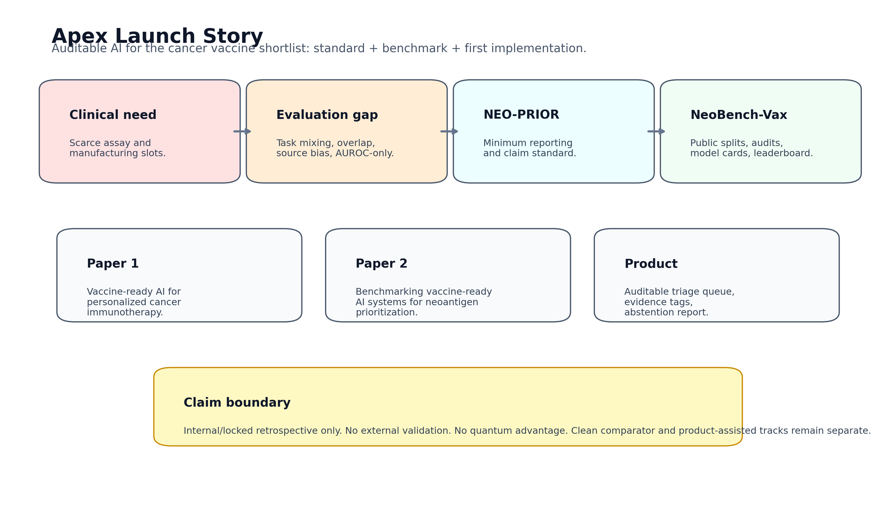
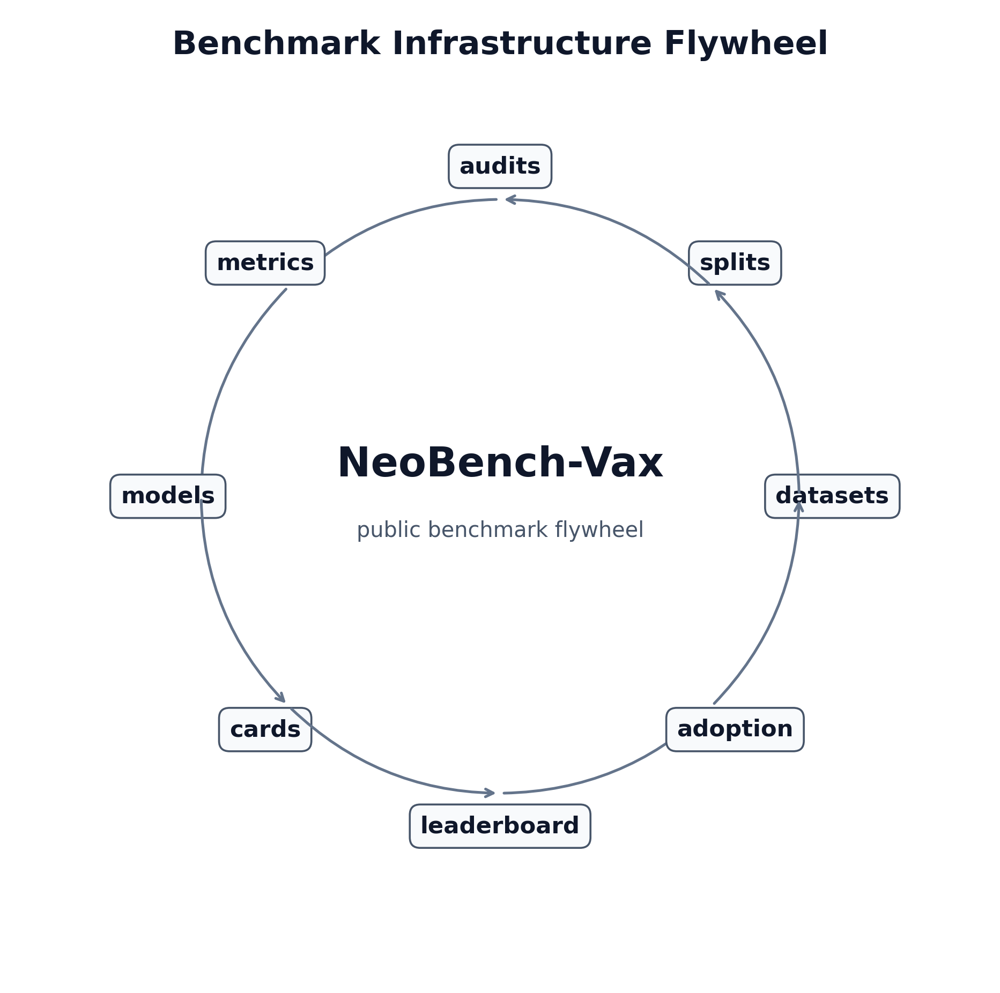
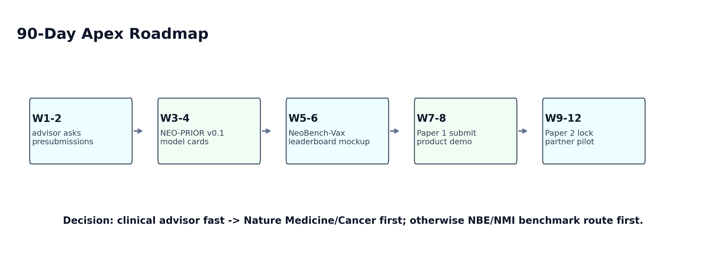
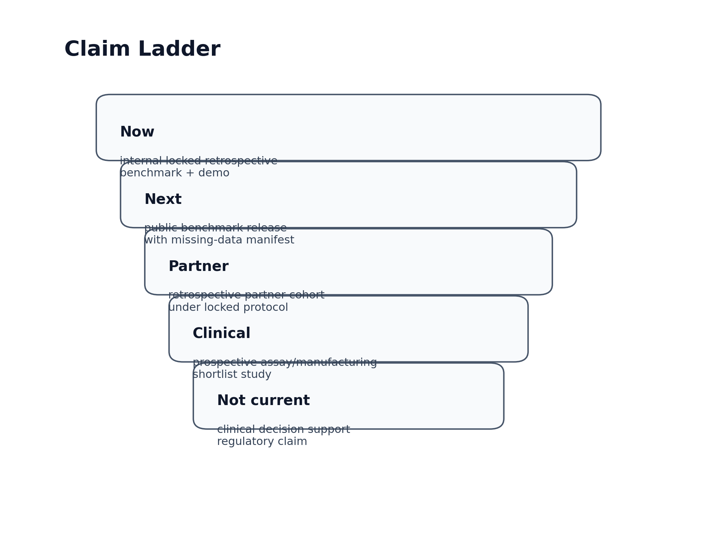
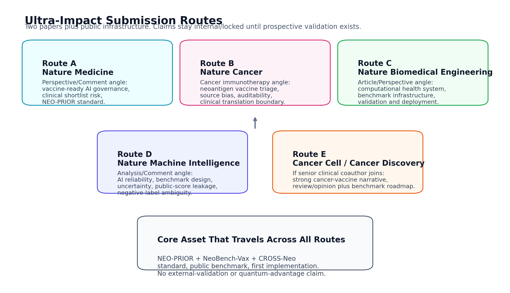
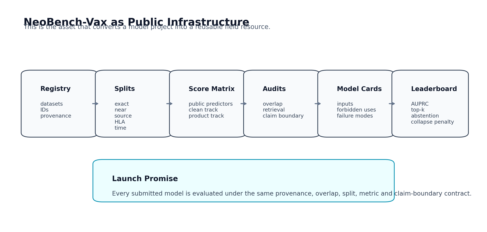
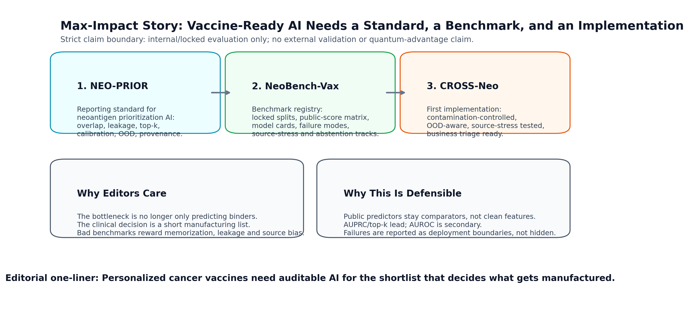
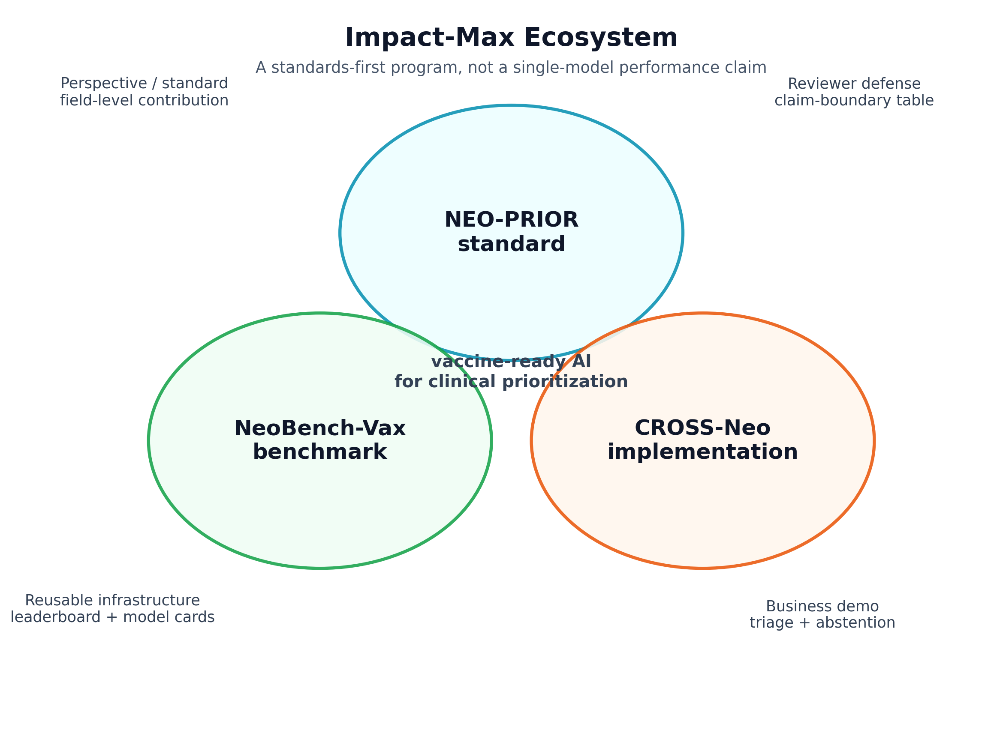
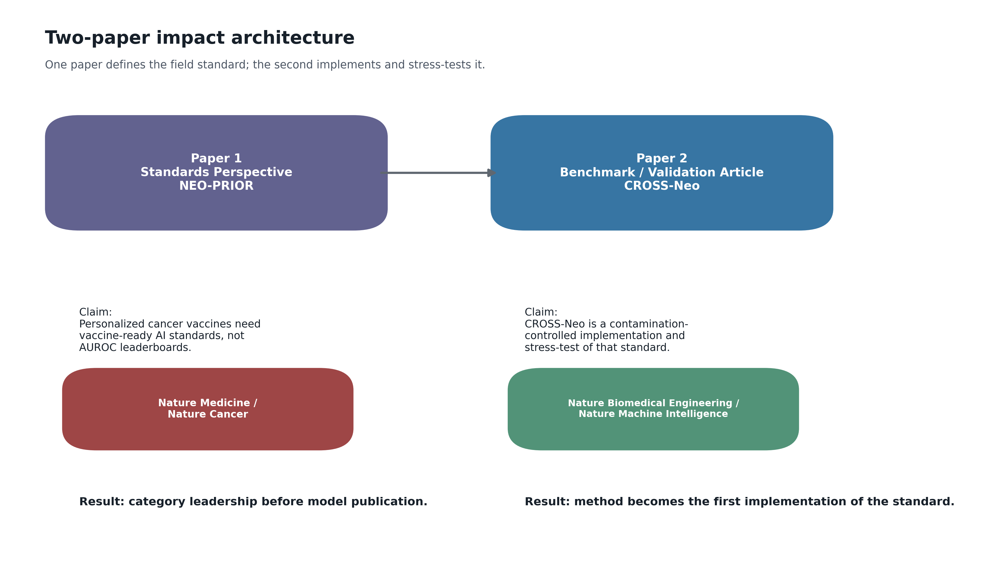

TL;DR
Editor-facing thesis
Personalized cancer vaccines need auditable AI for the shortlist that decides what gets manufactured.
This is stronger than a single-model claim because it creates a reporting standard, a benchmark infrastructure, and a first implementation under strict claim boundaries.
Why Now
Clinical pressure
Personalized vaccine teams must choose a small number of candidates from a larger mutation-derived pool.
Benchmark gap
Published predictors mix tasks, public overlaps, HLA shortcuts, source bias, negative-label ambiguity and AUROC-heavy reporting.
Actionable standard
NEO-PRIOR specifies what evidence any model should report before its shortlist is treated as vaccine-ready.
Three-Layer Architecture
| Layer | Role | High-impact value |
|---|---|---|
| NEO-PRIOR | Reporting and evaluation standard | Defines the field rulebook rather than competing only as another predictor. |
| NeoBench-Vax | Public benchmark infrastructure | Creates reusable split manifests, audits, model cards and clean/product-assisted leaderboard tracks. |
| CROSS-Neo | First implementation | Demonstrates the standard with conservative internal/locked retrospective evaluation. |
| Product triage | Business-facing audit queue | Supports Wednesday demo while separating product-assisted utility from clean scientific claims. |
Evidence Snapshot
| Result family | Internal result | Interpretation |
|---|---|---|
| v0 clean C_counterfactual | HLA-stratified AUPRC 0.388; top10 precision 0.400 | Best clean locked v0 baseline, but not enough for broad external claims. |
| v0 fixed late fusion | HLA-stratified AUPRC 0.473; top10 precision 0.500 | Positive complementarity signal, but weights must remain fold-safe and not test-tuned. |
| Product-assisted internal demo | Strict set n=89; positives=21; product score AUPRC 0.582; top10 precision 0.700 | Useful business triage signal, not clean scientific superiority. |
| Source-heldout stress | NEPdb/TESLA top-k often collapses | Central reason for OOD, abstention and source-stress reporting. |
Launch Figures









Two-Paper Strategy
Paper 1
Vaccine-ready AI for personalized cancer immunotherapy.
Perspective/Comment route: Nature Medicine, Nature Cancer, Nature Reviews Clinical Oncology, Nature Reviews Immunology.
Paper 2
Benchmarking vaccine-ready AI systems for neoantigen prioritization.
Benchmark/system route: Nature Biomedical Engineering, Nature Machine Intelligence, Cell Reports Medicine, Patterns.
Abstract Pack
Journal-Specific Abstracts #Nature Medicine / Nature Cancer Personalized cancer vaccines increasingly depend on computational prioritization of candidate neoantigens, yet the field lacks a shared standard for judging whether an AI-generated shortlist is trustworthy enough to guide immune testing, manufacturing or clinical prioritization. We propose NEO-PRIOR, a reporting and evaluation standard for vaccine-ready neoantigen AI, and outline NeoBench-Vax, a benchmark infrastructure with locked splits, overlap audits, model cards, top-k metrics, calibration and abstention reporting. The goal is not to claim that any current model is externally validated, but to define the evidence required before ranked shortlists can be interpreted clinically. #Nature Biomedical Engineering / Nature Machine Intelligence Neoantigen prioritization is a small-n biomedical ranking problem where the output may determine assay allocation and vaccine manufacture. We introduce NeoBench-Vax, a benchmark infrastructure for vaccine-ready neoantigen AI, and CROSS-Neo as a first contamination-controlled implementation. The framework separates clean comparator and product-assisted tracks, requires exact/near/source/HLA/time holdouts, reports AUPRC and top-k precision as primary metrics, and publishes claim-boundary model cards.
Business Demo Script
Wednesday Demo Executive Script We are not claiming a magic vaccine predictor. We are building the audit layer that tells a vaccine team which candidates to test first, why they were ranked, and when the model should not be trusted. The product output is a candidate queue with rank, score, HLA/peptide context, evidence tag, optional public comparator panel, OOD warning and NEO-PRIOR audit status. This demo is retrospective and internal. It is suitable for triage discussion and partner pilot design, not for clinical claims.
Claim Boundary
Can Say
Internal locked retrospective evaluation; auditable triage; reporting standard; benchmark infrastructure; first implementation.
Separate
Clean comparator track versus product-assisted track. Public predictor scores are disclosed and not used for clean superiority claims.
Do Not Say
External validation, quantum advantage, universal superiority, clinical decision support approval, or definitive biological negatives.
What To Send
| Audience | Send | Purpose |
|---|---|---|
| Nature Medicine / Nature Cancer editor | Presubmission inquiry + one-slide story + NEO-PRIOR checklist | Frame as clinical AI governance for personalized vaccines. |
| Nature Biomedical Engineering / NMI editor | Benchmark README + NeoBench-Vax infrastructure figure + claim ladder | Frame as computational health system and evaluation contract. |
| Senior vaccine advisor | Consensus-style statement + advisor ask + clinical value chain | Strengthen clinical legitimacy. |
| Business partner | Wednesday demo script + product-assisted queue + landing page | Show practical triage without overclaiming. |
Local Source Excerpts
Apex Memo
Apex Impact Launch Memo #Final Form The high-impact story is a launch program, not a model report: 1. **NEO-PRIOR**: reporting standard for vaccine-ready neoantigen AI. 2. **NeoBench-Vax**: public benchmark and leaderboard infrastructure. 3. **CROSS-Neo**: first implementation and stress-tested example. 4. **Product-assisted triage**: business-facing audit layer with strict claim separation. #Grand Claim Personalized cancer vaccines need auditable AI for the shortlist that decides what gets manufactured. #Why This Raises Impact Standards create rules. Benchmarks create reusable infrastructure. CROSS-Neo becomes the first working example rather than the only reason the work matters. #Immediate Moves Send presubmission inquiries, recruit a senior vaccine/immuno-oncology advisor, publish a benchmark mockup, and keep product-assisted demo claims separate from clean scientific validation.
Ultra Editorial Dossier
CROSS-Neo Ultra-Impact Editorial Dossier #Executive Upgrade The program should be pitched as a three-part field intervention: 1. **NEO-PRIOR**: a reporting and evaluation standard for vaccine-ready neoantigen AI. 2. **NeoBench-Vax**: public benchmark infrastructure with split manifests, overlap audits, model cards and leaderboard tracks. 3. **CROSS-Neo**: the first implementation and stress-tested example under the standard. #Strongest Editorial Thesis Personalized cancer vaccines now depend on computational shortlists, but the field lacks a consistent way to judge whether a shortlist is trustworthy. #Why This Is Bigger Than a Model A model paper asks whether one score is better. This package asks what evidence any model must provide before its shortlist can influence assay, manufacturing or clinical prioritization. #Paper 1 **Title:** Vaccine-ready AI for personalized cancer immunotherapy **Contribution:** NEO-PRIOR standard plus the clinical and benchmark rationale. **Best target:** Nature Medicine or Nature Cancer Perspective/Comment route. **Core display items:** - clinical value chain; - failure modes in current evaluation; - NEO-PRIOR checklist; - clean validation versus product-assisted triage. #Paper 2 **Title:** Benchmarking vaccine-ready AI systems for neoantigen prioritization **Contribution:** NeoBench-Vax benchmark and CROSS-Neo implementation. **Best target:** Nature Biomedical Engineering Article or Perspective route; Nature Machine Intelligence as an AI-benchmark alternative. **Core display items:** - benchmark architecture; - locked split contract; - model comparison with AUPRC/top-k/source stress; - claim-boundary and abstention decision tree. #What Must Stay Conservative - No external validation claim. - No quantum advantage claim. - No u ...
NEO-PRIOR Checklist
NEO-PRIOR Two-Page Checklist #Page 1: Minimum Reporting Items 1. Define the prediction task: binding, presentation, immunogenicity, triage or benchmark ranking. 2. Report data provenance: study, patient, assay, HLA, candidate-generation route and date/year when available. 3. Disclose public predictor use as feature, comparator, filter or product assist. 4. Report exact peptide and exact peptide-HLA overlap. 5. Report near-peptide, source-window, mutation-pair and TCR motif overlap when available. 6. Keep retrieval, scaling, imputation, calibration, feature selection and thresholding inside train folds. 7. Use exact, near, source/study, HLA allele/supertype, time/assay and retrieval-clean splits where feasible. 8. Treat negatives as ambiguous unless experimentally established as true non-immunogenic cases. 9. Report AUPRC, top-k precision, enrichment over prevalence and recall@k as primary metrics. 10. Report AUROC as secondary, not as the primary evidence of shortlist utility. #Page 2: Deployment and Claim Boundary 11. Report Brier/ECE, calibration curves and score reliability. 12. Report OOD flags and abstention coverage versus precision. 13. Report per-source and source-heldout results. 14. Report per-HLA and HLA-heldout/supertype-heldout results. 15. Publish split manifests, row IDs, seeds and scripts where possible. 16. Publish model cards with allowed inputs, forbidden inputs and known failures. 17. Separate clean scientific validation from product-assisted triage. 18. State whether public predictor scores are forbidden, allowed or disclosed. 19. State whether the evidence is internal, locked retrospective, external retrospective or prospective. 20. Include a one-p ...